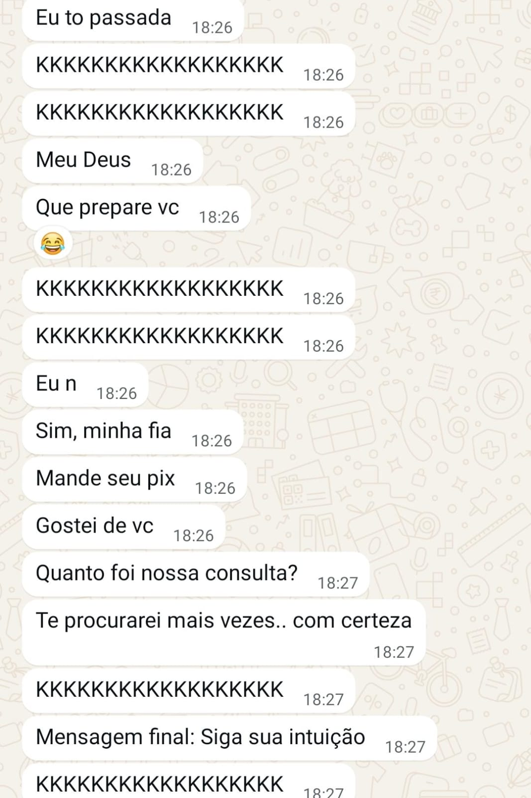
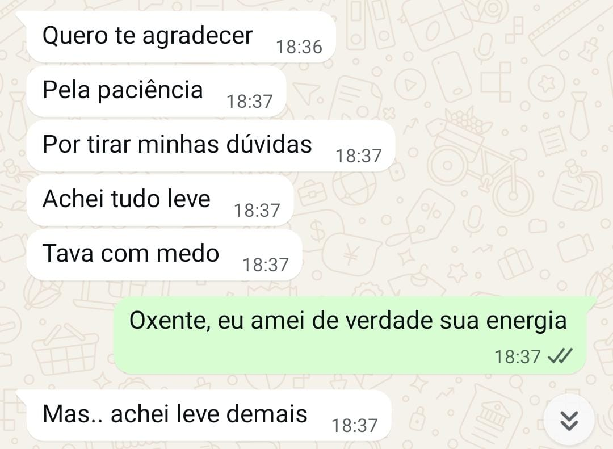
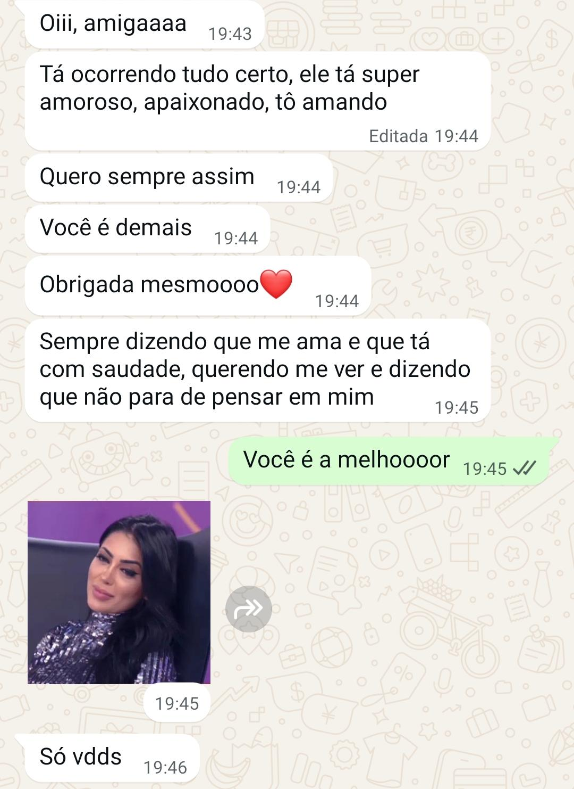
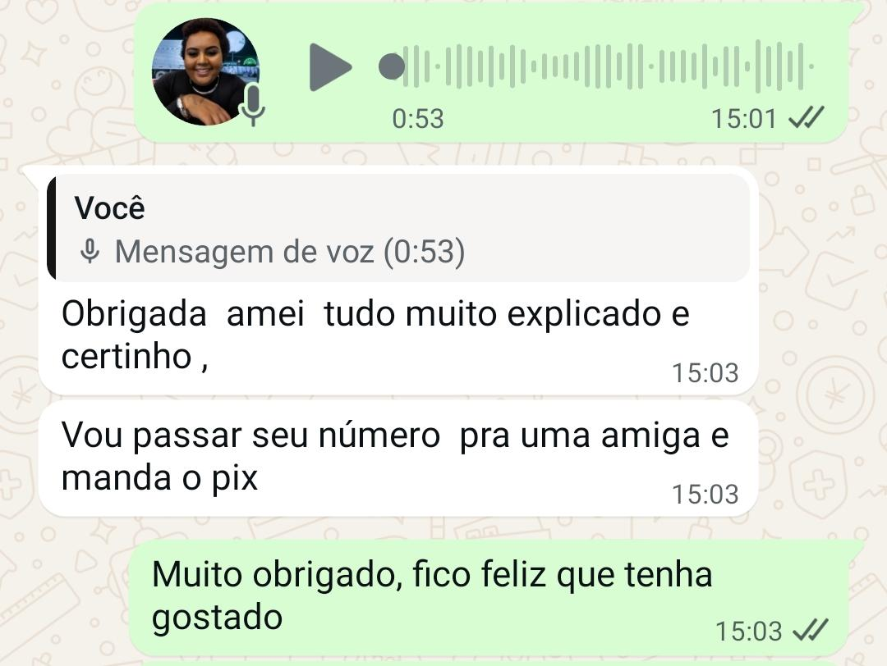
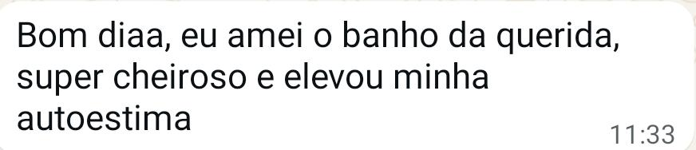
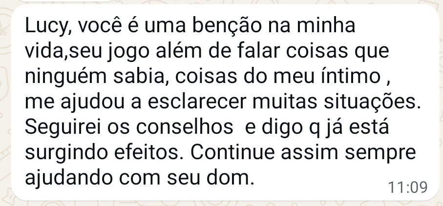
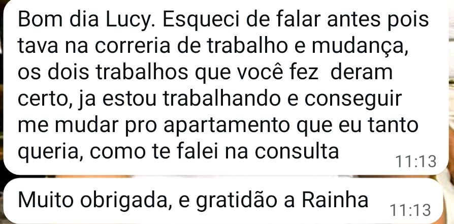

Aracaju – SE, 2026
Minha história com a cartomancia começou em 2016, inicialmente como uma curiosidade. Com o passar dos anos, o que começou de forma espontânea tornou-se profissão, propósito e parte da minha caminhada espiritual.
Meu contato com a espiritualidade, porém, começou ainda na infância, através de sonhos e percepções que posteriormente se apresentaram como avisos. Com o tempo, esse processo tornou-se mais consciente e encontrou nas cartas uma ferramenta de interpretação e orientação.
Comecei atendendo amigos e, posteriormente, pessoas que chegaram por indicação. Desde então, sigo aprimorando meu conhecimento através da prática, do estudo e da experiência — porque, para mim, nunca deixamos de aprender.
Hoje, além de cartomante, sou Yalorisá e continuo construindo minha trajetória espiritual com responsabilidade, respeito e dedicação.
A cartomancia não determina o seu destino.
As cartas apresentam tendências, possibilidades e aspectos que podem não estar claros naquele momento. A decisão e o livre-arbítrio continuam sendo seus.
Meu trabalho não é baseado em promessas ou soluções milagrosas. É sobre oferecer uma leitura responsável, objetiva e cuidadosa para auxiliar você a compreender melhor o momento que está vivendo.
Atendimentos
- Presencial — Santa Maria, Aracaju/SE
- Online — fotos e áudios
- Segunda, terça, quinta, sexta e sábado — 13h às 23h
- Quartas-feiras e domingos — sem atendimento
O que dizem
Mensagens de quem já foi atendido






